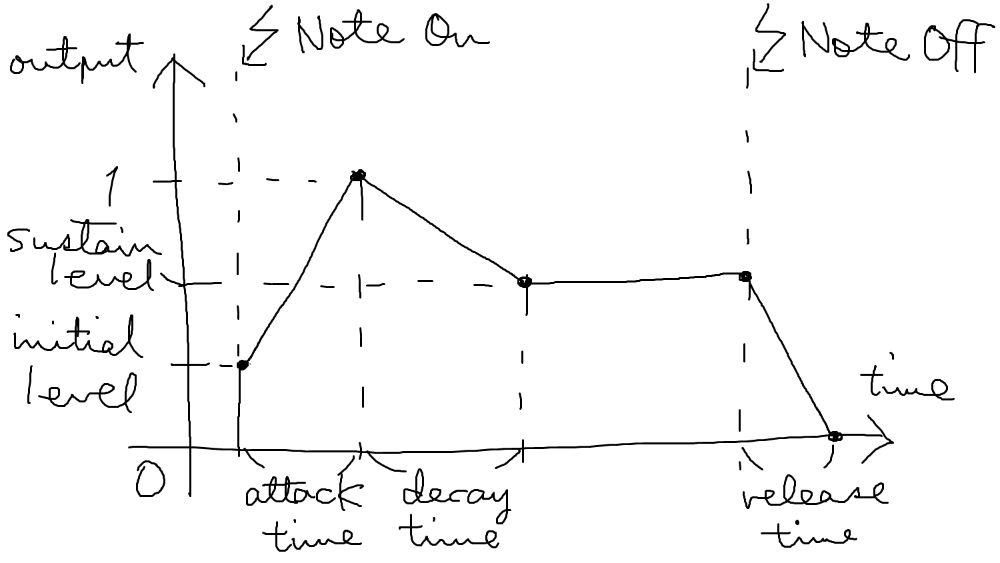

アタックタイム・ディケイタイム・サステインレベル・リリースタイムの 4 つのパラメータで制御されるエンベロープです。
ModDL では、さらに初期レベルのパラメータを追加しています。
入力はありません。
| 名前 | 必須/省略時 | 説明 |
|---|---|---|
attack |
0 |
アタックタイムです。 ノートオン後、出力値が 1 になるまでの時間を秒で指定します。 |
decay |
0 |
ディケイタイムです。 アタックタイム経過後、値がサステインレベルに変化するまでの時間を秒で指定します。 |
sustain |
1 |
サステインレベルです。 アタックタイム・ディケイタイム経過後の出力値を指定します。 |
release |
0 |
リリースタイムです。 ノートオフ後、出力値が 0 になるまでの時間を秒で設定します。 |
initial |
1 |
初期レベルです。 ノートオンの瞬間のレベルを指定します。 |
|
種別 |
キー |
説明 |
|---|---|---|
|
Note |
ノートオンでアタックを開始し、ノートオフでリリースを開始します。 |
ノートオン/オフからの時間に応じたエンベロープの振幅を出力します。
[0, 1]
ノートオンの瞬間 initial を出力します。
そこから出力は線形に増加し、attack 秒後に最大値 1
を出力します。
その後 decay 秒をかけて、出力は線形に
sustain まで減少します。
ノートオフを受け取ると、その瞬間から release
秒をかけて出力は線形に減少し、その後 0 になります。

pulseOsc * adsrEnv { attack: 0.5, release: 0.25 }
オシレータに対してエンベロープを適用します。
次のように、エンベロープをパイプで接続しないでください：
pulseOsc | adsrEnv { attack: 0.5, release: 0.25 }
オシレータの出力にエンベロープを適用することを意図していますが、そうはなりません。
エンベロープは「入力にエンベロープを適用するエフェクト」ではなく、「エンベロープを出力するジェネレータ」であり、入力を取りません。
エンベロープをエフェクトのように接続すると、オシレータの出力は無視され、結果として出力は単なるエンベロープの値になってしまいます（音としては聞こえません）。
エンベロープを適用するには * を使ってください。